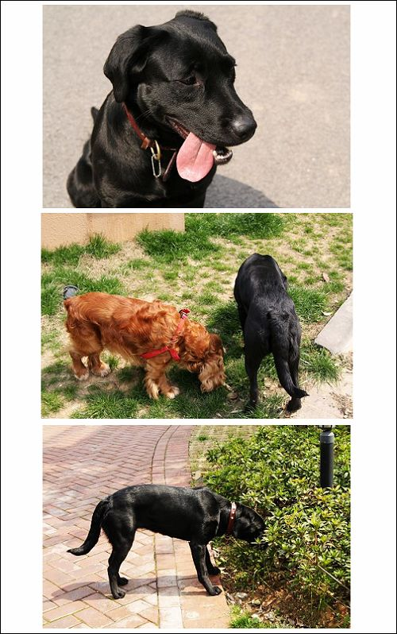

遛两只狗和遛一只狗的区别在于遛狗人的感受，尤其一只拉布拉多犬在自己身边闲庭信步，个头儿比luke大，不象luke始终迈着旧社会丫鬟的小碎步，低着脑袋一路在地面上搜索，一副劳苦大众的形象。两只狗一起有气势，有安全感。遇到别的狗狗发飙，它俩会一起上，luke也不会被大型犬明目张胆地欺负。它俩见面时热烈地纠缠在一起，象两个老熟人见面，欢乐地说：“你好啊，又见面啦！这个傻女人又要带我们出去疯啦~”
听拉多主人常说它在家里啃家具、啃拖鞋、咬电线，随地大小便，不得不把它关在笼子里，中午也没时间回来遛它。一只经常被关在笼子里无人陪伴精力旺盛的狗狗，一旦放出来多少有些神经质，狗狗的情绪和人一样需要疏导和安抚。人类的精神疾病已经跃入10大死亡疾病之列，人类尚且如此，动物们也不会幸免吧。反正我中午要遛狗，出于对狗狗的同情，顺便帮他们一起遛了。
拉多与Luke相比能更好地与人交流，听懂你要她做什么，能让人不喜欢吗？中午把她带回家，她居然吃了两盆皇家狗粮+一盆菜拌饭，是我家luke三天的口粮，luke吃东西拉多从不抢，动物世界也有男尊女卑？
本以为充分地在外面遛过，不会在它家里便便了吧，事与愿违，依旧是便便满地。晕啊，一位千金小姐，好歹一年两个月已经成年，怎么不知道讲究卫生呢？暗自庆幸，luke是只爱睡觉的狗狗，不会啃家具，基本我不在家它都在窝里睡觉，卫生习惯又好，省心，这个好孩子要好好疼呢。据说拉布拉多犬一岁半以前是魔鬼，一岁半以后是天使，拉多的爸爸妈妈就快熬出头了。

中午的太阳还不能称得上烈日，可还是要戴上帽子出去。花朵刚经历过连续风雨，这会儿又要接受干燥天气的考验。春天的柔情究竟在哪里？恩，应该是傍晚吧，傍晚遛狗最最舒服，空气中满是往年这个季节里熟悉的味道，激发出熟悉的记忆，不确切究竟是什么，但就是那么温和而又熟悉地徘徊在身体的触觉中。
8 Responses to “遛狗”
2009-03-18
拉布拉多，拉不拉多是个问题
2009-03-18
朋友家有只同样的拉多,颜色也是黑的
太阳好的时候带着帅小伙晒太阳,一出门就疯了~~
看来还要熬一年的时间,太会咬东西了.
2009-03-19
恩是啊，相同的季节总是能激发我们相同的情怀．
话说这个拉是大狗，可能是要到一岁半以后才懂事，我家这个虽然卫生还可以，但是外面喜欢拣东西吃，前天地上吃了荸荠，昨拉一天．．．
2009-03-19
能告诉我你用的是什么型号的相机和镜头吗?谢谢!
2009-03-19
canon 350D+几个副厂镜头，很一般的呀~
2009-03-19
哈哈~拉多昨天在新鲜的便便上打滚。。。。。。
NND，义务劳动给他洗澡，调皮死了，洗澡和吹风的时候总是用眼睛看着我，当时我想我还不了解你呀，你可千万别给我一口哦！那眼神跟人似的，让你不得不重视它。
2009-03-19
我刚打完5针的狂犬疫苗,结果被拉多不小心又给咬了,555
2009-03-21
其实她是条很好的狗.主要是在她大大时,没人在场直接阻止她.而狗狗对事后的处罚是不理解的.她其实是误认为在家里解决问题,才是对的.如果不当场抓住她,告诉她.即使带她出去散步,她也不会在外面大小便,因为她以为那样才是不对的.让邻居试着调教一下,这样的问题,不到一个月就能解决的.
Leave A Reply
存档只读，评论已关闭。